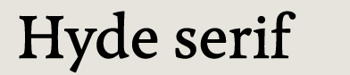
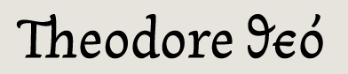
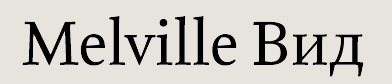
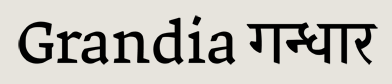
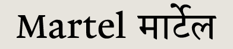

Work from the 2008 class
Download PDF specimens of the typefaces, Reflection on Practice essays on the development of the typefaces, and contact the designers. Read more about the course at the Department of Typography and Graphic Communication website.
Andrew Berry (Australia) email
web
Hyde  specimen
RoP
specimen
RoP
Emanuela Conidi (Italy) email
Nabil specimen
RoP

Melanie Duarte (USA) email
Theodore specimen

Joke Gossé (Belgium) email
Melville specimen
RoP
Michael Hernan (UK) email
web
Pseudo specimen
RoP
Michael Hochleitner (Austria) email
web
Ingeborg specimen
RoP
published by Typejockeys
Group specimen
Download the 2008 group specimen (1.4 MB)
Paul Hunt (USA) web
Grandia & Gandhara specimen
RoP
Mathieu Réguer (France) email
Cassius & Ali specimen
RoP

Dan Reynolds (USA/Germany) email
web
Martel/Malabar specimen
RoP
published by Linotype